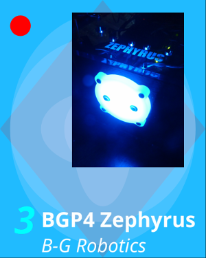

The scriptable renderer is an option in the program that can be used to generate custom badge / certificate designs. The renderer takes a script input that is interpreted linearly line by line. Earlier lines will be rendered first. Subsequent lines will be rendered over the previous renders (e.g. background will need to be rendered before foreground text, thus the commands generating the background will have to be listed first).
The top left corner of the image is the origin. Positions and sizes are described in the percentage of either the width or the height of the document (0 to 100). Positions and sizes that are a tuple will always require both proportions. Elements that are only scaled to either the width or height of the document will need to be specified with the width or height keyword: {width, height} proportion%.
Colors are defined either by the HTML hex color code or user-defined colors from the input data (Input tab). Valid user-defined color keywords are:
HTML hex color code defines a 24-bit RGB color value in hexadecimal format. For example, the RGB color 80,100,100 is 506464. The program also supports alpha channel for colors, and this is defined by adding another 8-bit value. For example, the previous color can take an alpha value of 50 by specifying: 32506464.
The following is a list of valid script commands for the renderer. Bold terms are command identifiers, italicized terms are parameters, and plain words are keywords. Terms inside curly braces are options where one parameter or a keyword must be selected. Terms inside square brackets are optional.
poly {fill, edge} color x1,y1 x2,y2 ... xn,yn
Draw a polygon with the specified color and vertices. The vertices must be specified in terms of the document width and height proportions. For example, a vertex in the middle of the document will be specified as 50,50. There can be no spaces between the values and the comma.
oval {fill, edge} color x y width height
Draw an oval with the specified color, position, and size. x, y, width, and height define a bounding box that will be filled by the oval in proportion to the document width and height (0 to 100 for each value). x and y are the top left of the bounding box.
circle {fill, edge} color center-x center-y {width, height} proportion%
Draw a circle with the specified color, position, and size. center-x and center-y define the center point of the circle. proportion% define the diameter of the circle in terms of the proportion of either the width or the height of the document.
blit {filepath, bg} {width, height, bound-x} {proportion%, bound-y} x y [alpha%]
Draw an image either specified by filepath or the badge background image (bg keyword). filepath is relative to the path of the script file.
The image can be scaled down three ways:
x and y define where the image will be placed. These values are percentages of the document width and height, respectively, as described in the Coordinates section. x can also take the value "left", "centered", or "right" and y can take the value "top", "centered", or "bottom". These position keywords can be used to align the image relative to the document center and edges.
The optional alpha% parameter will apply translucency to the image. This value can range from 0 to 100 with 0 being fully transparent and 100 being opaque.
text "string" "font-name" font-attributes x y bound-x bound-y [{centered, right}]
Draw a text with the specified string, font name, and font attributes. The text will be fit inside a bounding rectangle defined by bound-x and bound-y and placed to a point as specified by x and y (the top left corner of this bounding rectangle). The text will be left-aligned and centered vertically within the box. The optional alignment option can be used to change the horizontal alignment of the text within the box.
Valid values for font-attributes are "bold", "italic", and "bold,italic" (no spaces).
{primarytext,secondarytext,number} "font-name" font-attributes x y bound-x bound-y [{centered, right}]
Similar to text, but use the badge's primary text, secondary text, or number for the string.
The following example results in the badge below:

poly fill textbg 0,0 0,100 100,100 100,0 poly fill 25ff0000 0,50 50,0 100,50 50,100 oval fill 30ddddff 50 50 90 90 oval fill 30ddddff 50 50 30 60 oval fill 30ddddff 50 50 60 30 circle fill 30ddddff 50 50 height 10 circle fill 30ddddff 50 50 height 30 circle fill 30ddddff 50 50 width 90 circle fill ff0000 10 10 width 10 blit bg 100 60 35 5 100 number 00ffff "Noto Sans" bold,italic 2 75 15 20 right primarytext text "Noto Sans" bold 20 75 75 20 secondarytext text "Noto Sans" italic 20 90 75 10